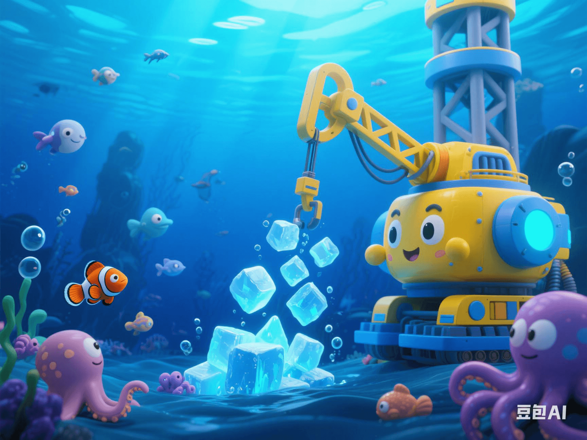

Deep-Sea Combustible Ice Mining Crisis: Energy Dawn or Ecological Disaster?
PeaceLove.Top Insights :2025-04-19
🌊 The Allure and Challenges of Deep-Sea Combustible Ice
With the continuous growth of global energy demand and the gradual depletion of traditional energy resources, deep-sea combustible ice (also known as natural-gas hydrates) has begun to attract high attention from countries around the world as a highly potential energy resource. This ice-like substance deposited at the bottom of the deep sea contains a large amount of methane and is regarded as an 'unexplored treasure' for future energy. 🛢️🔋 However, with the development of technology and breakthroughs in mining technology, the mining of deep-sea combustible ice has quietly begun around the world. But behind the potential of this energy, there are also huge environmental risks and non-negligible ecological crises. 🌊💥 Therefore, we can't help but wonder: Does the mining of deep-sea combustible ice bring an energy dawn for humanity or trigger an irreversible ecological disaster? ⚖️
🔥 The Energy Potential of Deep-Sea Combustible Ice
1. Abundant Energy Reserves ⛽🌍
The energy stored in deep-sea combustible ice is extremely huge. It is estimated that the reserves of combustible ice in the global oceans are more than twice the total amount of currently known oil and natural gas. This makes it a 'rising star' in future energy and is regarded as a possible solution to the global energy crisis. 🌟 Countries such as China, Japan, and the United States have been actively researching and testing mining technologies, hoping to achieve commercial production in the future. With the continuous progress of technology, the mining of deep-sea combustible ice is gradually becoming possible, which brings great potential for global energy supply. 🌍
2. Expectations for Clean Energy 💧
Compared with traditional fossil fuels, natural gas is considered a'relatively clean' energy source, and the mining and utilization of deep-sea combustible ice are also expected to be a way to reduce carbon-dioxide emissions. As the main products after combustion are carbon dioxide and water, the environmental pollution of natural gas is relatively low. 🌿 If combustible ice can be effectively mined and utilized, it may help alleviate the global energy crisis and bring new hope for addressing climate change. ⛅
🌱 Environmental Risks of Deep-Sea Combustible Ice Mining
Although deep-sea combustible ice has great energy potential, its mining is not without risks and may even have a profound impact on the marine ecosystem and the global climate. ⚠️
1. Intensification of Climate Change 🌡️
Deep-sea combustible ice contains a large amount of methane, which is a more powerful greenhouse gas than carbon dioxide. If a leak occurs during the mining process, methane will be released into the atmosphere, having a more serious impact on climate change. Studies have shown that the greenhouse effect of methane is 25 times that of carbon dioxide! 🌍🔥 Moreover, with global warming, the temperature and pressure conditions at the bottom of the deep sea may change, which may affect the stability of deep-sea combustible ice and further trigger methane leakage. 🌡️💨
2. Destruction of the Ecological Environment 🌊🦠
The deep-sea ecosystem is one of the most fragile ecological environments on Earth, and any mining activity will have an irreversible impact on it. The mining process of deep-sea combustible ice requires a large amount of drilling and destruction, which may pose a serious threat to the habitats of deep-sea organisms. 🌐 In particular, the mining process may lead to the leakage of toxic gases and chemical substances, affecting the water quality and biodiversity in the deep sea. At the same time, the vibrations and noises from the mining activities may also interfere with the normal lives of marine organisms. 🐋
3. Risk of Marine Geological Disasters 🌋
The storage structure of deep-sea combustible ice is very complex. Once mined improperly, it may trigger disasters such as submarine subsidence and earthquakes. The stability of gases and hydrates on the seabed is very sensitive, and over-mining may lead to an imbalance in the seabed structure, thereby triggering large-scale marine geological disasters. 🌊💥
💡 Future Outlook: The Game between Energy and Ecology
In the process of developing deep-sea combustible ice, we are facing a delicate balance between energy and the environment. The technology for mining these deep-sea resources is constantly advancing, but how to avoid an ecological disaster while meeting energy demand is an urgent problem for us to solve.
1. Breakthroughs in Innovative Technologies 🛠️
To minimize the environmental impact of deep-sea combustible ice mining, scientists are researching more advanced mining technologies. For example, developing safer mining equipment, improving methane-recovery technology, and exploring environmentally friendly mining methods to reduce gas leakage and damage to the marine ecosystem. 🔬
2. Global Cooperation and Supervision 🌍
The mining of deep-sea resources should not be the sole action of a single country. It involves global environmental protection and resource-sharing issues. The international community needs to formulate more stringent regulatory policies and environmental-protection standards to ensure that mining activities are carried out within a strict environmental-protection framework. 🌏💚
🚀 Conclusion: The Double-Edged Sword of Deep-Sea Combustible Ice
As a highly potential energy resource, deep-sea combustible ice does bring hope for global energy supply. However, the environmental risks it brings cannot be ignored. Should we choose to continue mining to meet energy demand or opt for a more green and sustainable energy solution? This will be a major decision in future global energy and environmental policies. ⚖️ In the future, how to balance energy development and environmental protection may be the greatest test for humanity when facing this 'energy dawn' of deep-sea combustible ice. 💡